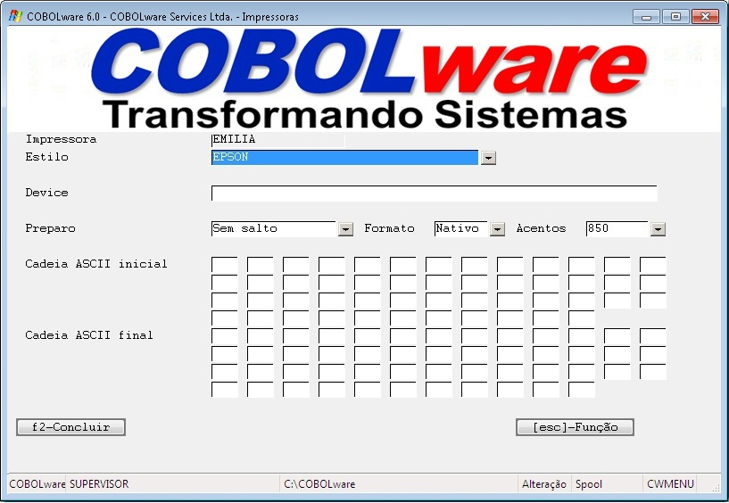
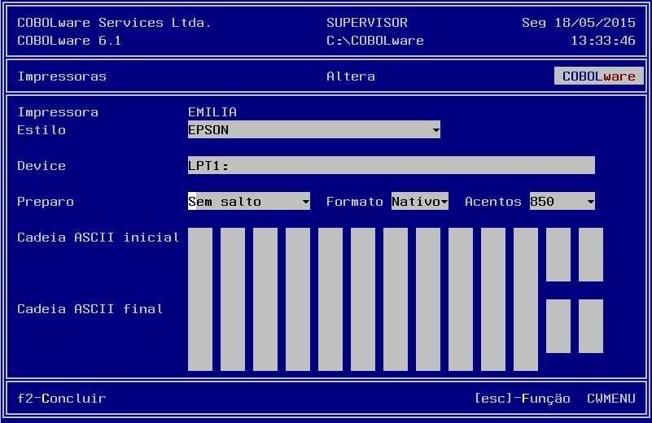

Manutenção da tabela de modelos de impressoras.
|
Modo gráfico |
|
 |
|
Modo texto |
|
 |
Impressora
Identificação da impressora para seleção no cadastro de usuários, na impressão do spool e na configuração de relatórios.
Estilo
Determina a tabela de estilos associada ao modelo.
Device
Nome do dispositivo associado a uma impressora real de acordo com a plataforma hospedeira tal como LPT1:, /dev/lp0, \\maquina\impressora. Alternativamente a impressão pode ser direcionada para:
Preparo
Define se deve haver comando de salto de página antes de iniciar a impressão de um relatório (Form Feed) e/ou no término.
Formato
Ajusta impressão entre plataformas heterogêneas. Se, por exemplo, a estação está na plataforma Windows (indicador de fim de linha X"0D0A" ) e o serviço de impressão é prestado pelo Unix deve ser usado o padrão adequado que é apenas X"0A".
Acentos
Habilita conversão de acentos do DOS (Página de código 850).
Cadeia ASCII inicial
Estabelece uma sequência de até 50 códigos ASCII que devem ser enviados para a impressora no início de cada relatório.
Cadeia ASCII final
Estabelece uma sequência de até 50 códigos ASCII que devem ser enviados para a impressora no término da impressão de cada relatório.